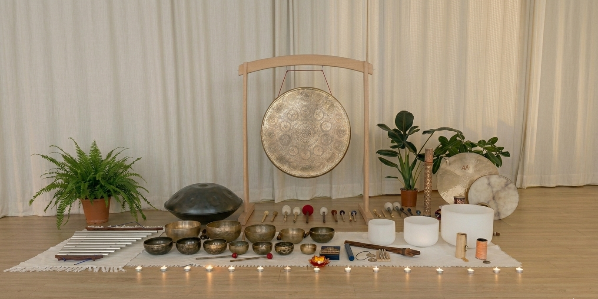
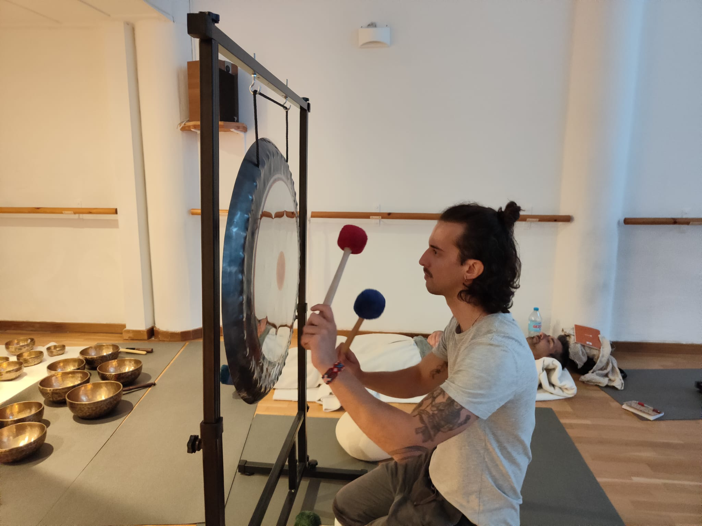
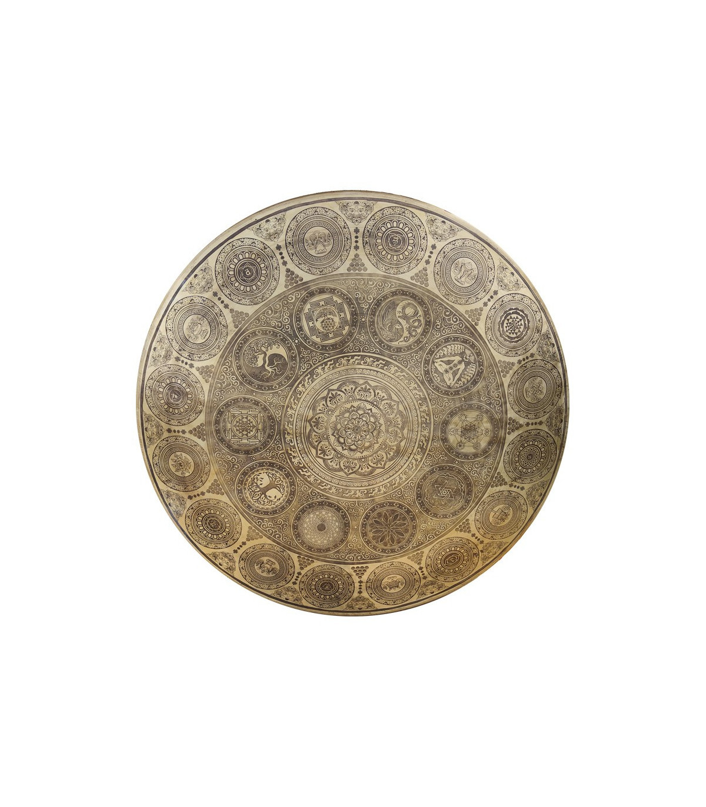

Baño de gong
en Valencia.
El gong produce una vibración que pocos instrumentos igualan. Una sesión para soltar de verdad.
Una inmersión sonora en un solo instrumento.
Un baño de gong es una sesión guiada donde el cuerpo se envuelve durante 60-90 minutos en las vibraciones del gong. Te tumbas. El resto lo hace el sonido.
El gong es el instrumento más intenso que existe para esto — su sonido complejo, profundo y multifrecuencia es capaz de llenar completamente el espacio sonoro y de inducir un estado de relajación muy profunda que pocos instrumentos consiguen igualar.
No tienes que "hacer" nada. No hay que entender de música ni de meditación. El gong hace el trabajo.
Reservar una sesión
¿Te suena alguna de estas?
Este tipo de sesión puede ayudarte especialmente si estás en alguno de estos puntos.
Las técnicas de relajación suaves no consiguen apagar tu mente. Necesitas algo con más potencia para que el sistema nervioso realmente suelte.
Tu mente es muy activa y el silencio puro te genera más ruido mental. El gong ocupa todo el espacio sonoro y no deja hueco para pensar.
Llevas tiempo cargando algo en el cuerpo que no consigues liberar con descanso normal.
Has probado meditación, yoga, terapia — y quieres una experiencia sensorial diferente, más física, más directa.
Simple y cuidado.
Unos minutos para respirar, soltar el día y entrar en el espacio. Sin prisa.
El sonido se construye gradualmente — golpes suaves, silencios, intensidad creciente — dejando espacio para que el sistema nervioso se regule a su ritmo.
Sin saltar. Si lo necesitas, compartimos sensaciones y lo llevo a una práctica simple para volver con los pies en el suelo.
Lo que suele pasar.
Cada persona lo vive a su manera. Lo más habitual al recibir el gong:
- Relajación profunda del sistema nervioso
- Sensación física de "oleadas" de vibración recorriendo el cuerpo
- Liberación de tensión acumulada — a veces emocional, a veces solo física
- Estados entre el sueño y la vigilia
- Mente que se detiene sin esfuerzo
- Sensación de ligereza o de peso, según la persona y el momento

El gong.
Trabajo con un gong Tam Tam nepalí de 7 metales — un gong grande, con la profundidad de graves y la riqueza de sobretonos necesaria para que la sesión se sienta físicamente en el cuerpo, no solo se escuche.
Su carácter sonoro es el que permite ese efecto envolvente que define un buen baño de gong — el sonido se construye, crece y se sostiene en el espacio durante toda la sesión.

¿Cómo quieres vivirlo?
El baño de gong se adapta al formato que necesites.
Sesión privada, personalizada al momento. Más íntimo, más fácil dejarse llevar en profundidad.
Reservar →Para vivir juntos una experiencia que muchas parejas describen como una de las más conectadas que han compartido.
Reservar →Sesiones abiertas en Valencia con otro ritmo. La energía del grupo amplifica la experiencia.
Ver fechas →Así lo viven.
Una experiencia mágica e inolvidable. No sabía muy bien qué esperar de unir el paddle surf con un concierto de cuencos tibetanos, pero superó cualquier expectativa. Flotar en el agua mientras el sonido de los cuencos vibra por toda la tabla es una sensación de paz indescriptible. ¡Repetiré sin dudarlo!
Fue una experiencia increíble con ram, me relaje mucho y disfrute al máximo la experiencia del baño de sonido. Sin duda alguna, lo recomiendo muchísimo.
Una experiencia increíble, no puedes saltarte esta vida sin pasar por ese baño de sonido además conectando con el mar, el atardecer, las gaviotas. Gracias RAM
Mravillosa! Ram un genio que con su musica y su paz, transmite la energia necesaria para hacer que esa experiencia sea única! Sumado al regalo del atardecer...
La tabla, el agua y el sonido que acompañó hizo que la experiencia sea única, fue soñado !!!!
Una actividad maravillosa para desconectar, parar y disfrutar de la calma. Ram ayuda a que asi sea, guiando el tiempo y a la vez dejando que fluya. Lo recomiendo para hacer un plan diferente.
Una experiencia mágica e inolvidable. No sabía muy bien qué esperar de unir el paddle surf con un concierto de cuencos tibetanos, pero superó cualquier expectativa. Flotar en el agua mientras el sonido de los cuencos vibra por toda la tabla es una sensación de paz indescriptible. ¡Repetiré sin dudarlo!
Fue una experiencia increíble con ram, me relaje mucho y disfrute al máximo la experiencia del baño de sonido. Sin duda alguna, lo recomiendo muchísimo.
Una experiencia increíble, no puedes saltarte esta vida sin pasar por ese baño de sonido además conectando con el mar, el atardecer, las gaviotas. Gracias RAM
Mravillosa! Ram un genio que con su musica y su paz, transmite la energia necesaria para hacer que esa experiencia sea única! Sumado al regalo del atardecer...
La tabla, el agua y el sonido que acompañó hizo que la experiencia sea única, fue soñado !!!!
Una actividad maravillosa para desconectar, parar y disfrutar de la calma. Ram ayuda a que asi sea, guiando el tiempo y a la vez dejando que fluya. Lo recomiendo para hacer un plan diferente.
Preguntas frecuentes.
Están relacionados pero no son lo mismo. Un baño de sonido combina varios instrumentos — cuencos, handpan, gong. Un baño de gong se centra exclusivamente en el gong durante toda la sesión, lo que produce una experiencia más intensa y envolvente, centrada en un único carácter sonoro.
No. No necesitas saber meditar ni tener ninguna experiencia previa con sonoterapia.
Ropa cómoda. Yo me encargo del resto — esterillas, mantas y cojines.
Sí, y es completamente normal. El cuerpo sigue recibiendo los beneficios aunque la mente se desconecte.
Ambas opciones están disponibles — ver formatos arriba.
La intensidad del gong puede no ser adecuada para personas con hiperacusia, ciertos implantes electrónicos o condiciones cardíacas. Si es tu caso, házmelo saber antes de la sesión y adaptamos la intensidad.
¿Listo para soltar?
Escríbeme por WhatsApp y lo organizamos. Sin formularios, sin esperas.
Escribir por WhatsApp